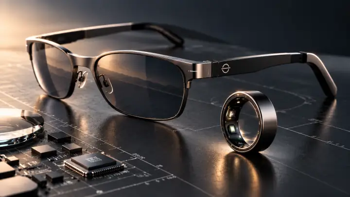
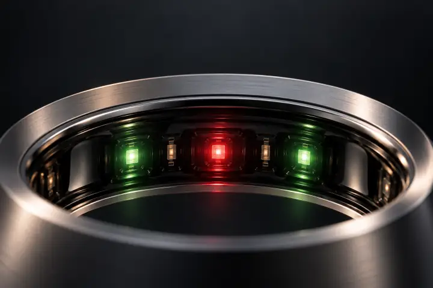

Wearables
Un dispositivo puede registrar señales y convertirlas en indicadores. Para interpretarlos, conviene distinguir lo que capta el sensor de lo que calcula el software.
Ciencia
Tecnología, ciencia y experiencia humana.
Un espacio para comprender la tecnología que llevamos con nosotros: cómo funciona, qué información ofrece y qué preguntas conviene hacer antes de confiar en sus resultados.
Divulgación y análisis de fuentes públicas sobre tecnología y experiencia humana.

El sensor registra un cambio físico.
El sistema comprueba si la señal es utilizable.
Un algoritmo calcula un indicador.
El resultado se lee junto a las condiciones de uso y sus límites.
Si la calidad es insuficiente, revisar la colocación o repetir la lectura según el manual. Repetir no convierte por sí solo una estimación en una medida validada.
Esquema conceptual: el proceso concreto depende del dispositivo.
Un dispositivo puede registrar señales y convertirlas en indicadores. Para interpretarlos, conviene distinguir lo que capta el sensor de lo que calcula el software.
Una respuesta útil empieza por datos adecuados y una pregunta bien planteada. Su claridad no demuestra que sea correcta.
Tecnología avanzada en un formato discreto
Los anillos inteligentes integran sensores y componentes electrónicos miniaturizados capaces de registrar diferentes señales relacionadas con la actividad física y el funcionamiento del organismo.
Algunos anillos utilizan fotopletismografía (PPG), una tecnología que analiza las variaciones de la luz reflejada por los tejidos para estimar parámetros relacionados con el pulso.
Los acelerómetros permiten registrar movimientos y generar estimaciones relacionadas con la actividad física y el descanso.
Determinados dispositivos registran variaciones de temperatura de la piel que pueden ayudar a identificar tendencias a lo largo del tiempo.
La disponibilidad y precisión de estas mediciones dependen de los sensores, los algoritmos y las condiciones de utilización.
Su diseño permite realizar mediciones durante las actividades cotidianas y el descanso, combinando tecnología de monitorización con comodidad y facilidad de uso.
La información recogida por los sensores se procesa mediante algoritmos que permiten identificar patrones y presentar datos comprensibles para el usuario.
La utilidad de un dispositivo inteligente no depende únicamente de su capacidad para registrar datos, sino también de cómo los interpreta y presenta.
Los algoritmos transforman las señales captadas por los sensores en estimaciones e indicadores que facilitan el seguimiento de determinados aspectos de la actividad y del descanso.
Estos indicadores deben entenderse dentro de las posibilidades y limitaciones de cada tecnología.

Validar una tecnología, validar un dispositivo concreto y obtener una certificación sanitaria son tres cosas distintas. No se presentan aquí como equivalentes.
Publicaciones que estudian un principio, por ejemplo la fotopletismografía. Ese conocimiento no acredita por sí solo la precisión de un producto.
Estudios que evalúan la precisión de un modelo determinado, en las condiciones de esa prueba. El resultado no se extiende a otros modelos.
Autorizaciones aplicables a un dispositivo sanitario específico. No cubren al resto de productos ni a la marca en su conjunto.
Las referencias se añadirán cuando haya una fuente verificable, con su alcance. Ahora no hay ninguna publicada.
Antes de aceptar una conclusión, preguntamos qué se ha registrado, cómo se ha obtenido el resultado y en qué condiciones se ha comprobado. Una especificación comercial describe una función; no sustituye una evaluación de su rendimiento.
En IGO buscamos la excelencia tecnológica en cada categoría, desde lo más accesible hasta lo más avanzado.
Creemos que la calidad no depende solo del precio ni del número de funciones, sino del equilibrio entre tecnología, utilidad y experiencia de uso.
IGO. La calidad no es una gama, es nuestra filosofía.
IGO Research reúne explicaciones para leer una ficha técnica con mejores preguntas: qué registra el dispositivo, qué depende del teléfono o de la conexión y qué evidencia respalda cada función. Las capacidades de un producto deben comprobarse en la documentación de su modelo.